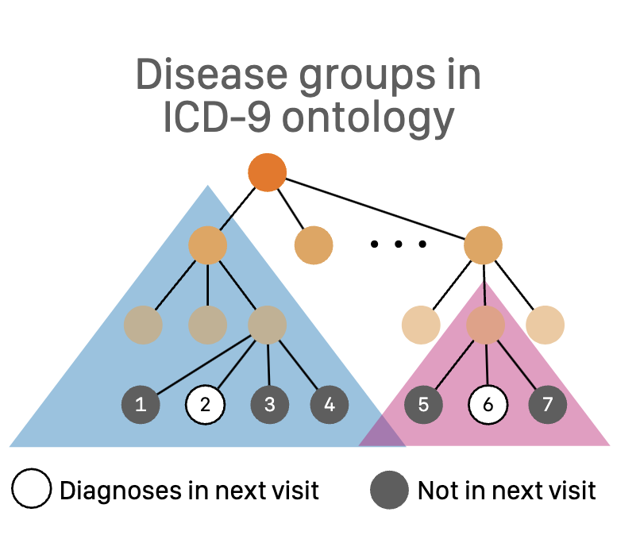
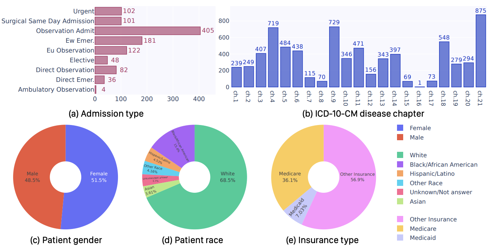

Xiaoxuan Wang (PhD student at UCLA)
[ Short Bio, Publications, Education,Teaching ]
 |
Xiaoxuan(Mandy) Wang
PhD student,
3551 Boelter Hall,
Email: xw27 [at] cs [dot] ucla [dot] edu [ Email, LinkedIn, Google Scholar, CV ] |
|
Short Bio
I am currently a third-year Ph.D. student in Computer Science at University of California, Los Angeles (UCLA), where I have the privilege of being advised by Prof. Wei Wang and collaborating closely with Prof. Yizhou Sun. My research interests focus on post-training for Large Language Models and Machine Reasoning.
I earned my bachelor's degree in Computer Science from the University of Illinois at Urbana-Champaign (UIUC) in May 2022.
Publications
(* denotes equal contribution.)
|
Xiaoxuan Wang*, Ziniu Hu*, Pan Lu*, Yanqiao Zhu*, Jieyu Zhang, Satyen Subramaniam, Arjun R. Loomba, Shichang Zhang, Yizhou Sun, Wei Wang ICML, 2024. Media Covered by Nature News Feature [Paper] [Code] [Website] [Media Coverage] |
|  |
Mingyu Derek Ma, Xiaoxuan Wang, Yijia Xiao, Anthony Cuturrufo, Vijay S Nori, Eran Halperin, Wei Wang NeurIPS GenAI4Health, 2024 and AAAI Spring Symposium, 2024. [Paper] |
|  |
Mingyu Derek Ma, Chenchen Ye, Yu Yan,Xiaoxuan Wang, Peipei Ping, Timothy S Chang, Wei Wang [Paper] [Code] [Website] |
|
Mingyu Derek Ma, Xiaoxuan Wang, Po-Nien Kung, P. Jeffrey Brantingham, Nanyun Peng, Wei Wang AAAI, 2023. [Paper] |
|
Jatin Chauhan, Xiaoxuan Wang, Wei Wang EMNLP Findings, 2023. [Paper] |
|
Heting Gao, Xiaoxuan Wang, Sunghun Kang, Rusty Mina, Dias Issa, John Harvill, Leda Sarı, Mark Hasegawa-Johnson, Chang D. Yoo Speech Communication, 2022. [Paper] |
Education
PhD. Student in Computer Science
University of California, Los Angeles (UCLA), U.S.
Sep 2022 - Present
Bachelor in Computer Science
University of Illinois Urbana Champaign
Aug 2018 - May 2022
Teaching
Fall 2023: Teaching Assistant CS245 Big Data Analytics@UCLA
Spring 2022: Course Assistant CS446 Machine Learning @UIUC
Other Links:[ Email,
LinkedIn,
Google Scholar,
CV ]
Last Updated: Dec 2023.